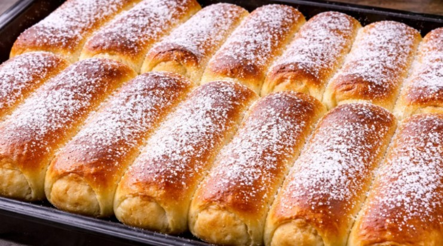
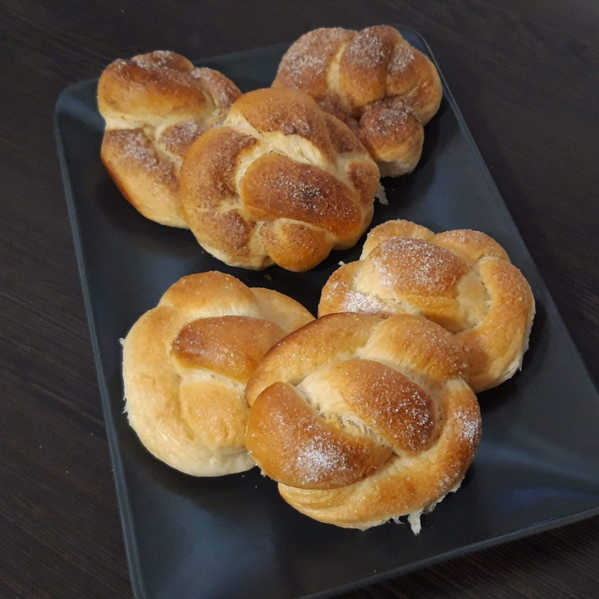
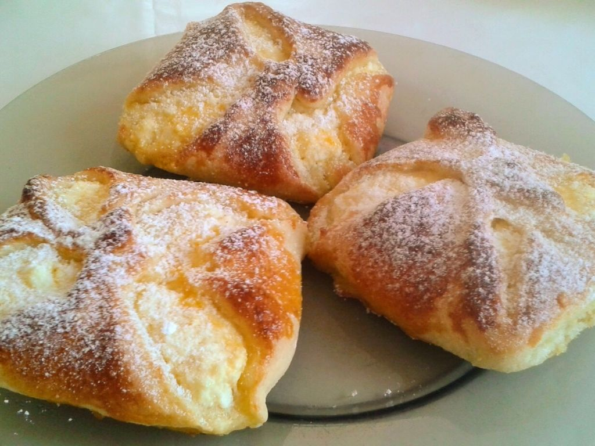
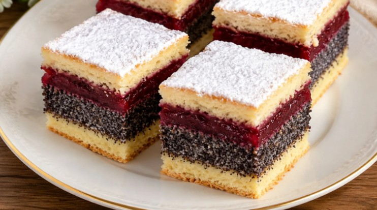
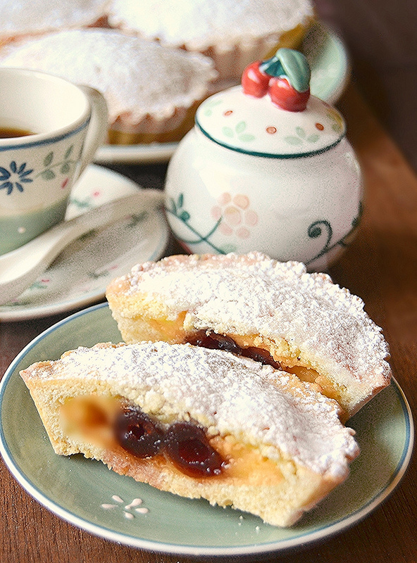
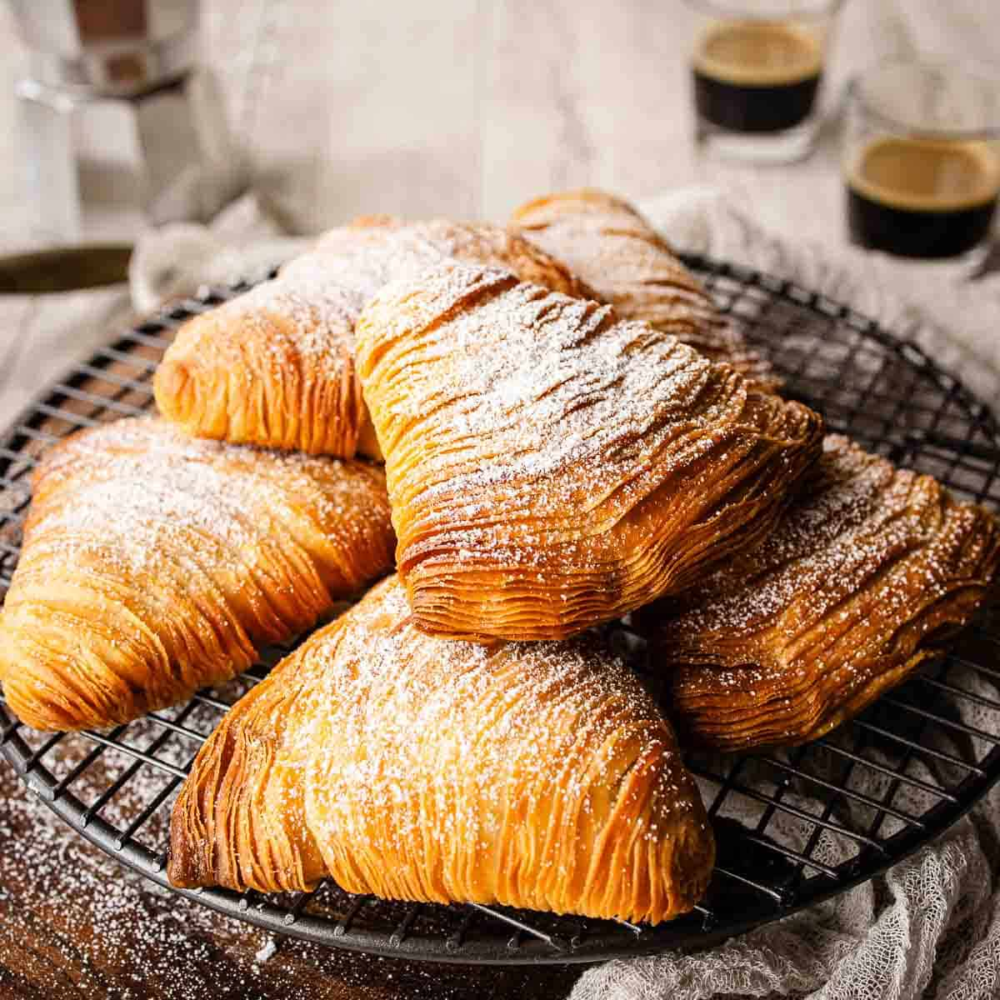

A bukta egy kelt tésztából készülő puha péksütemény, amelyet különféle édes töltelékekkel tálalnak. Ezek lehetnek sűrű sárgabarack- vagy szilvalekváros töltelék, de gyakran készítik édesített túrókrémmel, darált dióval, illetve mákkal is. Tálalás előtt a sütemény tetejét általában porcukorral szórják meg.

A briós egy enyhén édes péksütemény, amely jellegzetes csigavonalas alakjáról vagy a népszerű fonott verziójáról ismerhető fel. Tetejét sütés előtt gyakran jégcukorral, kristálycukorral vagy tojásfehérjével kenik meg a fényes, ropogós réteg érdekében. Önmagában, illetve vajjal vagy lekvárral tálalva is kedvelt reggeli pékáru.

A csigák rendkívül népszerű péksütemények, amelyek édes és sós változatban is elérhetőek. Az édes kínálat legkedveltebb darabja a klasszikus kakaós és a illatos fahéjas csiga, míg a sós ízek kedvelői számára a paradicsomos-sajtos pizzás csiga, valamint a különféle sajtos és baconös variációk jelentenek tökéletes alternatívát.

A túrós péksütemények a hazai kínálat legnépszerűbb darabjai közé tartoznak, amelyeknél az édesített, akár citromhéjas túrótöltelék jellemző. Legelterjedtebb formájuk a leveles túrós táska és a kelt tésztás túrós batyu, de a kínálat ugyanolyan kedvelt darabja a tepsiben sült, kockákra vágott túrós pite is.

A tepsis pite neve által utalt módón sült, puha sütemények, amelyeket négyzet alakú szeletekre vágva tálalnak. Számos ismert változatuk létezik, mint a túrós vagy a meggyes, de a legkülönlegesebb darabja a mák és a meggy ízeit ötvöző meggyes-mákos pite.

Az édes péksütemények klasszikus, házias képviselői a puha, foszlós kelt tésztából készülő kalácsok. Kínálatunkban megtalálhatóak a hagyományos fonott változatok, valamint a gazdagon töltött - kakaós, diós, mákos és mazsolás - verziók is.

A hagyományos szicíliai cannoli egy cső alakú, borral átitatott tésztából áll, amelyet addig sütnek, amíg hólyagos és ropogós nem lesz. Ezek hűvös, bársonyos, édesített juhtejből készült ricotta krémmel vannak megtöltve. A krémet gyakran étcsokoládé darabokkal vagy kandírozott citrushéjjal keverik, míg a nyitott végeket apróra vágott pisztáciával vagy maraschino cseresznyével díszítik, és porcukorral szórják meg, hogy tökéletes kontrasztot alkossanak az állagok között.

Az olasz cornetto egy félhold alakú reggeli tészta, amelyet réteges élesztős tésztából készítenek, amely tojást és cukrot is tartalmaz, így lágyabb, édesebb és briósszerűbb állagú, mint egy francia croissant. Mindig bőségesen megtöltve sima tésztakrémmel, gazdag csokoládés mogyorókrémmel vagy sárgabaracklekvárral. Sütés előtt vagy után jellemzően könnyű cukorszirupos mázzal kenik meg, így a hagyományos reggeli kávézási rutin édes és aromás alapját képezi.

Az olasz pasticciotto crema e amarena egy omlós tésztából készült pite, amely a hagyományos, krémes gyümölcsös variációja. A ropogós tésztakéreg selymes cukrászkrémet és szirupos amarena meggyet rejt magában. Sütés közben a meggy fanyar-savanykás aromája összeérik a lágy krémmel, a kész süteményt pedig alkalmanként porcukorral szórják meg, a kiegyensúlyozott ízvilág megtartásáért.

A pasticciotto crema e amarena egy aranybarnára sült, omlós tésztából készült klasszikus olasz pite, amely a hagyományos verzió egy gyümölcsös variációja. A ropogós tésztakéreg selymes cukrászkrémet és szirupos amarena meggyet rejt magában. Sütés közben a meggy fanyar-savanykás aromája összeérik a lágy krémmel, a kész süteményt pedig alkalmanként porcukorral szórják meg, a kiegyensúlyozott ízvilág megtartásáért.

A klasszikus croissant különleges, látványos változata, amely kívül ropogós, belül pedig puha, leveles rétegekből áll. A kétszínű tésztaköpeny gazdag, selymes pisztáciakrémet rejt magában. Teteje aprított pisztáciával szórva, az intenzívebb pörkölt ízvilágért.

Ropogós, leveles tésztából készült fonott péksütemény, amely sűrű, karamellás-juharszirupos tölteléket rejt magában. Tetejét ropogós, pörkölt pekándió-darabokkal szórva, amely tökéletesen ellensúlyozza a töltelék édességét.

A croissant és a muffin formáját ötvöző, csigavonalban tekert sütemény. A spirális rétegek között lágy, rózsavizes krém és friss málnaszemek bújnak meg. Tetejét az egész málnaszemek és finom porcukor teszi teljessé.

A hagyományos félhold alak helyett látványos, szabályos kocka formára sütött péksütemény. Belseje rendkívül levegős és könnyed szerkezetű, amely gazdag krémtölteléket rejt. Tetejét fényes mázak és különféle díszítések, például csokoládé, gyümölcsös öntet vagy pisztácia teszik egyedivé.

Puha, vajas brióstésztából készült péksütemény, amelyet gazdag, selymes karamellréteg borít. Tetejét ropogós, pelyhes tengeri sókristályokkal szórják meg, amelyek karakteres sós kontraszttal egyensúlyozzák ki a karamell édességét.